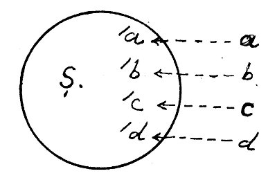

Felsefenin ne olduğu ve neyle uğraştığı Eski Yunan’da düşüncenin uyandığı zamandan beri ileri sürülmüştür. Platon’a göre felsefe hayretten ve hayreti çözmek için yapılan zihin gayretinden doğmuştur. Aristoteles daha ileri gider: Ona göre felsefe çelişmeyi (tenakuzu) çözmek için zihnin yaptığı gayrettir (Metafizik, C. I, s. 119). Fakat çelişmenin çözülmesi ile yalnız rasyonel bağlantılar kurulmaz. Aristoteles’e göre asıl sebep araştırılır; felsefe sebeplerin sebebini araştırmaktır (Metafizik, C. I, s. 11-14). Yine Aristoteles başka bir yerde “felsefe varlık ilmidir” diyor. Bu anlamda var olanlarla, yani özel varlık türleri ile uğraşan ilimlerin üstünde felsefe bütün varlık türlerini kuşatan en evrensel varlıkla uğraşır. Başka ilimler varlığın bir vasfı ile ve belirli bir amaca göre meşgul oldukları halde, felsefe varlığı sırf varlık olarak inceler. Bunun için Aristoteles felsefeyi “varlık olmak bakımından varlığın ilmi” diye tanımlar (Metafizik, C. I, s. 109). Bu anlayışa göre felsefenin bütün ilimleri kuşatması, yani ansiklopedik bir ilim olması gerekir. Bu ansiklopedik felsefe anlayışı ortaçağda da Aristoteles otoritesi ile beraber devam etmiştir. Aristoteles’i şerh edenler, Hıristiyanlıkla uzlaştıranlar, İslam dünyasına nakledenler, İslam filozofları ve bunların daha sonra Latince’ye tercümesi, Hıristiyan ortaçağ filozofları hep bu geleneğin devamıdır.
Aristoteles’e göre evrensel bir ilim demek olan felsefe içinde her ilmin ayrı bir yeri vardır (Metafizik, C. I, Fasıl 1). Başka deyişle her ilim kendi mertebesine göre bir derece felsefedir. Her ilim kurulabilmek için başka bir ilmi temel olarak kullanır. İlk temele doğru gidildikçe felsefe olma vasfı kuvvetlenir. Mesela fiziğin kurulması için matematiğin, matematik için mantığın kurulması gerekir. Öyle ise matematik fizikten, mantık da matematikten daha fazla felsefedir. İlimler arasındaki mertebelenme aynı zamanda felsefenin mertebelenmesidir ve böylece ilk felsefeye yükseliriz. Bu mertebelenmede en yüksek bilgi ilk felsefe (philosophia prima) olduğu gibi, en aşağı bilgi yani felsefe olma vasfı en az olanı da teknik bilgidir.[23]
İbn Sina Şifa adlı büyük ansiklopedik-felsefi eserini yazdığı zaman tamamen Aristoteles geleneğine uyarak metafizik başta olmak üzere ilimleri sıralamıştır. Batı’da Albertus Magnus, Aquino’lu Thomasso aynı yolu tutmuşlardır. Bu zatın Summum Theologicum’u Aristoteles tarzında bir ansiklopedidir.
Bu anlayış yanında felsefeyi evrensel bilgi sayan bir görüş daha vardır ki, bu 17. yüzyılda Descartes’a aittir. Ona göre de felsefe evrensel ilimdir. Fakat bütün ilimleri içine almaz, başka ilimler konuları ve amaçları ile felsefe dışında kalırlar. Felsefe ancak onlara görüş ve metot vermesi, onların emin bir yönde yeniden kuruluş tarzlarını göstermesi bakımından evrensel mahiyettedir.[24] Descartes bütün eski bilgilerden şüphe ile başladı, önce duyularımızın bizi aldatabileceğini kabul etti. Sonra ilimlerden hiçbirisinde kesin bilgi olma vasfı bulamadı. Bedihî, açık ve seçik olarak ilmi yeniden kuracak sağlam bir temel araştırdı. Eski tasım mantığı, cebir ve dil ilmi vs’nin sağlam olmadıklarını gösterdikten sonra, nihayet her şeyden şüphe etti. Fakat madem ki şüphe ediyorum öyleyse düşünüyorum, madem ki düşünüyorum öyleyse varım (Cogito ergo sum) dedi. Demek ki bilginin kesin ve sarsılmaz temeli düşüncedir. Düşünce hakkındaki bilgiden, düşünceden ibaret olan kendi varlığımızın kesinliğine geçebiliriz. Descartes oradan tekrar dış âleme dönerek, fizik dünyası ile manevi dünyanın münasebetini yani idraklerimizin doğruluğunu ispat için, iki âlem arasında bir ahenk olması gerektiği ve böyle bir ahengin, yani gördüklerimiz şeylerin aslına uygun olmasının düşünce ile dış dünya arasında Allah tarafından kurulmuş bir düzen yardımıyla kabil olduğu sonucuna vardı. Böylece âlem hakkındaki bilgiyi Allah bilgisinden çıkardı. Kısaca, Descartes’da şuur ve dış âlem hakkındaki bilgiler Allah hakkındaki tasavvurumuza bağlanıyor ve bilgimizin doğruluğu bu suretle mümkün oluyor.